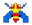
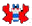
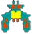

简易版仿网页小蜜蜂游戏
本游戏一共两个关卡。
第一关：有两种小蜜蜂，分别是：
子弹击中一次就死亡。得分10分子弹击中两次才死亡。得分20分
第二关：增加一种强大的蜜蜂，就是
需要击中三次才死亡。得分30分
第三关：强大的蜜蜂增更多。
我方飞机作战，蜜蜂撞到飞机，游戏就输了。
游戏操作说明
点击“开始游戏按钮”或按键盘上的“Enter”键或按键盘上的“J”键，进行游戏的开始。键盘上的“上下左右”键控制飞机的上下左右移动。键盘上的空格键控制飞机发射子弹。游戏通过一关后，提示进入第二关。
作者及相关说明
本简易版仿网页小蜜蜂游戏开发者为本人(网名：LYC123)，游戏使用原生JavaScript编写，游戏采用的是单体模式开发（非面向对象）。更多关注的我的个人博客：www.congitlive.cn，爱技术，爱生活，一直不断学习和研究web前端开发的90后草根站长.